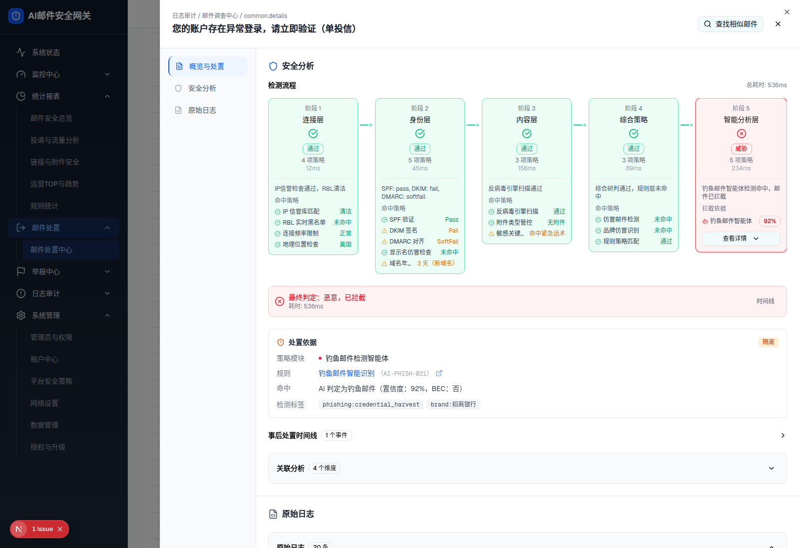
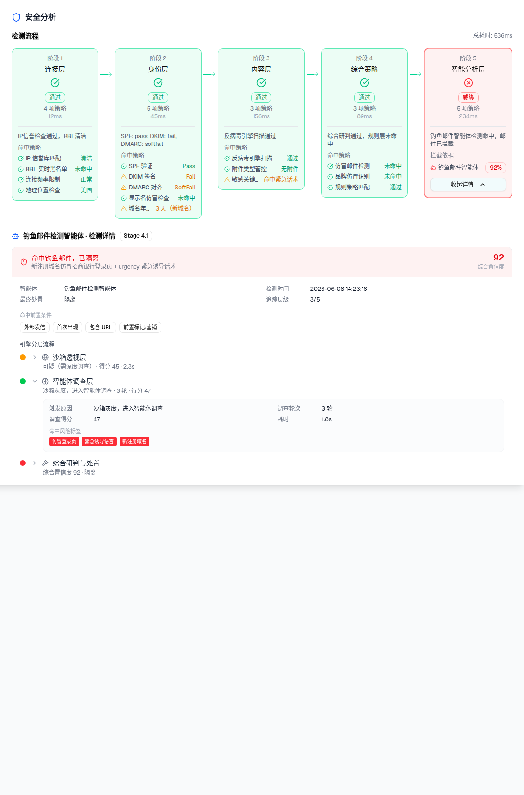

| 属性 | 值 |
|---|---|
| 所属组件 | 2.3 详情抽屉 Detail Drawer |
| 主文件 | email-handling-disposal-center/index.html |
| 触发路径 | 抽屉左导航『安全分析』（此处为含 phishingAgent 的钓鱼邮件 inv-16，已展开智能体详情） |
| 范围说明 | 「规则命中统计」不在本规格范围（见主文件说明块） |
下方内嵌为安全分析模块真实 HTML（钓鱼智能体卡已展开）。
IP信誉检查通过，RBL清洁
SPF: pass, DKIM: fail, DMARC: softfail
反病毒引擎扫描通过
综合研判通过，规则层未命中
钓鱼邮件智能体检测命中，邮件已拦截
命中前置条件
引擎分层流程
可疑（需深度调查） · 得分 45 · 2.3s
沙箱灰度，进入智能体调查 · 3 轮 · 得分 47
命中风险标签
综合置信度 92 · 隔离
URL 风险摘要
威胁类型：仿冒登录页
处置记录


| 区块 | 内容 |
|---|---|
| 检测流程 | 5 阶段横向卡（连接层/身份层/内容层/综合策略/智能分析层）；各卡 状态徽 + 策略数 + 耗时 + 命中策略明细；硬编码 Mock，恒『AI 阶段命中拦截』 |
| 钓鱼智能体检测卡 | 仅 phishingAgent 存在时；点『查看详情』展开：命中钓鱼已隔离 + 综合置信度 + 基本信息 + 命中前置条件 + 引擎分层(沙箱透视/智能体调查/综合研判) + URL 风险摘要 + 处置记录 |
| 处置依据卡 | log.disposalBasis 驱动：策略模块 + 规则(可跳配置页) + 命中明细 + 检测标签 + 动作徽 |
| 事后处置时间线 | 按 deliveryStatus 选 1 情景（云端情报召回/管理员手动召回/威胁溯源智能体）；折叠 |
| 关联分析 | 4 维度（发信人/收信人/攻击活动/相似邮件）；硬编码 Mock；发信人+攻击活动默认展开 |
| 比对项 | demo 实际 DOM | 嵌入的 HTML | 一致 |
|---|---|---|---|
| 模块容器 | #section-analysis | 一致 | ✅ |
| 检测流程阶段 | 5 阶段，AI 阶段=威胁 | 一致 | ✅ |
| 钓鱼卡 | phishingAgent 存在 → 显示 + 可展开 | 一致(inv-16) | ✅ |
| Mock 性质 | 流程/时间线/关联硬编码 | 与源码一致 | ✅（见主文件 §7-D6） |